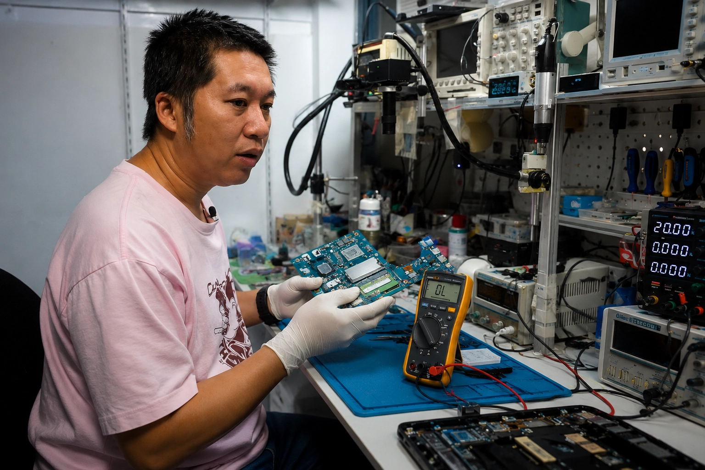

บริการซ่อมโน๊ตบุ๊ค PC และ Gaming คอมพิวเตอร์ประกอบ
ครบวงจรในเชียงใหม่ พร้อมบริการส่งซ่อมออนไลน์ทั่วประเทศ
สารภี • สันทราย • เมือง ช.ม. • หางดง • มช. • ราชภัฏ • พายัพ

ช่างซ่อมบอร์ดโดยตรง
เครื่องมือวิเคราะห์วงจรครบครัน
ประสบการณ์
เครื่องที่ซ่อม
รับประกันงานซ่อม
ลูกค้าพอใจ
คะแนนรีวิว
อาการเปิดไม่ติด ไฟไม่เข้า ตรวจเช็คระบบวงจรบอร์ด
แบตเสื่อมไว หรือแบตบวม ปรึกษาเปลี่ยนแบตใหม่
จอแตก จอริ้ว จอภาพดับ เปลี่ยนจอใหม่คุณภาพสูง
ชิปเซ็ต การ์ดจอ เปิดติดดับ ซ่อมวงจรตรงจุดทุกอาการ
อัพเกรดความเร็ว เพิ่ม RAM เพิ่มประสิทธิภาพเครื่อง
ลง Windows โปรแกรมพื้นฐาน ปรับแต่งระบบพร้อมใช้งาน
"ซ่อมไว งานดี ยุติธรรม แนะนำครับ"
- พงษ์ศักดิ์ L."ช่างเก่งมากครับ อธิบายรายละเอียด บริการดี ประทับใจครับ"
- Nattapong K."ส่งเครื่องมาจากกรุงเทพฯ ซ่อมเสร็จเร็ว แพ็คดีมาก"
- Supaporn P."เปิดไม่ติดหลายร้านบอกซ่อมไม่ได้ ร้านนี้ซ่อมได้ ขอบคุณครับ"
- กิตติพงษ์ ว.รวมข้อสงสัยเบื้องต้นเกี่ยวกับบริการซ่อมคอมพิวเตอร์และโน๊ตบุ๊ค
063-594-2636
@935pcssr
เปิดทุกวัน 09:00 - 20:00 น.
555/99 ( มบ.ดีญ่าวาเลย์ สารภี ) หมู่ 4 ซอย 8 ต.หนองผึ้ง อ.สารภี เชียงใหม่ 50140